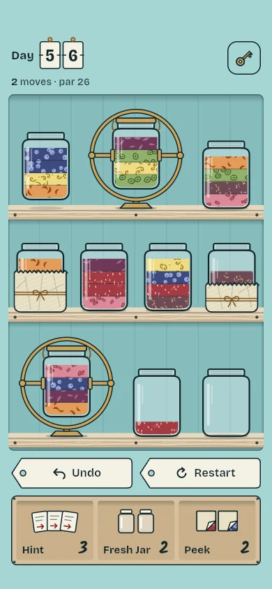
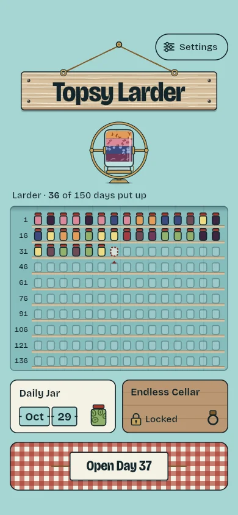
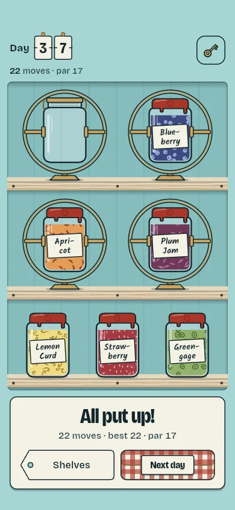

Why it plays differently
Jars that turn over
Brass cradles let you flip a jar so its bottom layer comes to the top. That makes puzzles with a single empty jar solvable, and keeps every move worth a thought.
A full preserving season
150 days of puzzles, each checked by a solver so every one can be finished, plus a new Daily Jar every day. All free.
Calm by design
No timers, no lives, no ads. Undo and Restart are always free, so a wrong pour costs nothing but a tap.
Readable by everyone
Every fruit has its own texture, from strawberry seeds to blueberries and apricot slices, so colour is never the only clue.
On the shelf



How to play
- Tap a jar to pick it up.
- Tap another jar to pour its top layer onto the same fruit or into an empty jar.
- Fill a jar with one fruit to seal it with wax. Stuck? Turn a jar in its cradle.
Questions
Is it free?
All 150 days and the Daily Jar are free. Optional baskets of tools (Hint, Fresh Jar, Peek) and the Endless Cellar mode are in-app purchases.
Are there ads, or do you collect data?
No ads, no tracking, no accounts. The game collects no data; your progress stays on your device.
Can I play if I am colour-blind?
Yes. Each fruit has its own pattern as well as its colour.
Does it work offline?
Yes, completely. You only need a connection to buy something in the shop.